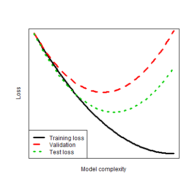

Background
Supervised learning


Supervised learning
- Mapping \(f:A \rightarrow B\) using a finite dataset.
- What is a good model?
- A model that generalises well to unseen data.
- Generalises: average over new data
- well: minimises Loss
- \(\tilde{f} = \arg\min_f {\mathbb{E}}_{\hat{w}}{\mathbb{E}}_{{\mathbf{x}},{y}}\left[{\mathcal{L}}\left({y}, f({\mathbf{x}}; \hat{w})\right)\right]\)
Gradient boosting
Algorithm:
- Initialize model with a constant value: \(F_0(x) = \underset{\gamma}{\arg\min} \sum_{i=1}^n {\mathcal{L}}(y_i, \gamma).\)
- For \(m = 1\) to \(M\):
- Compute so-called ‘’pseudo-residuals’’: \(r_{im} = -\left[\frac{\partial {\mathcal{L}}(y_i, F(x_i))}{\partial F(x_i)}\right]_{F(x)=F_{m-1}(x)} \quad \mbox{for } i=1,\ldots,n.\)
- Fit a base learner (e.g. tree) \(h_m(x)\) to pseudo-residuals, i.e. train it using the training set \(\{(x_i, r_{im})\}_{i=1}^n\).
- Compute multiplier \(\gamma_m\) by solving the following one-dimensional optimization problem: \(\gamma_m = \underset{\gamma}{\operatorname{arg\,min}} \sum_{i=1}^n {\mathcal{L}}\left(y_i, F_{m-1}(x_i) + \gamma h_m(x_i)\right)\).
- Update the model: \(F_m(x) = F_{m-1}(x) + \gamma_m h_m(x).\)
- Output \(F_M(x)\).
Gradient tree boosting
At iteration \(\small m+1\):
- Computes \(\small g_i=-r_i\) and \(\small h_i=\left[\frac{\partial^2 {\mathcal{L}}(y_i, F(x_i))}{\partial F(x_i)^2}\right]_{F(x)=F_{m-1}(x)}\quad \mbox{for } i=1,\ldots,n.\)
- Approximates \({\mathcal{L}}\) by a second order approximation about \(F_{m}\): \[{\small {\mathbb{E}}_{{\mathbf{x}},{y}}\left[ {\mathcal{L}}({y}, (f_m+f)({\mathbf{x}}) \right] \approx \frac{1}{n}\sum_{i=1}^{n} {\mathcal{L}}(y_i,f_m({\mathbf{x}}_i))+g_i f({\mathbf{x}}_i) +\frac{1}{2}h_if({\mathbf{x}}_i)^2 }\]
- Solves the quadratic problem exactly: \(\small \hat{w} = -\frac{\sum g_i}{\sum h_i}\) and \(\small {\mathcal{L}}(y,\hat{w}) = -\frac{\left(\sum g_i\right)^2}{2\sum h_i}\)
- Splits nodes to maximize loss reduction:
\({\small \frac{1}{2}\left[\frac{\left(\sum_{i\in I_L(j,s)}g_i\right)^2}{\sum_{i\in I_L(j,s)}h_i} + \frac{\left(\sum_{i\in I_R(j,s)}g_i\right)^2}{\sum_{i\in I_R(j,s)}h_i} -\frac{\left(\sum_{i\in I_k}g_i\right)^2}{\sum_{i\in I_k}h_i}\right] }\)
The problem
- Wrong objective:
\({\mathcal{L}}(y,\hat{w}) = -\frac{\left(\sum g_i\right)^2}{2\sum h_i}\) is not an unbiased estimator of \({\mathbb{E}}_{\hat{w}}{\mathbb{E}}_{{\mathbf{x}},{y}}\left[{\mathcal{L}}\left({y}, f({\mathbf{x}}; \hat{w})\right)\right]\) - Regularization: \({\mathcal{L}}+ \Omega(w)\)
- XGBoost and LightGBM each have > 10 hyperparameters that should be configured.
- High dimensional optimisation is difficult.
- Time consuming.
- Requires human expertiese.
- Cross validation is information inefficient.
- Variable results.
- Risky in terms of over and underfitting.
- Kaggle mantra: trust your local validation…